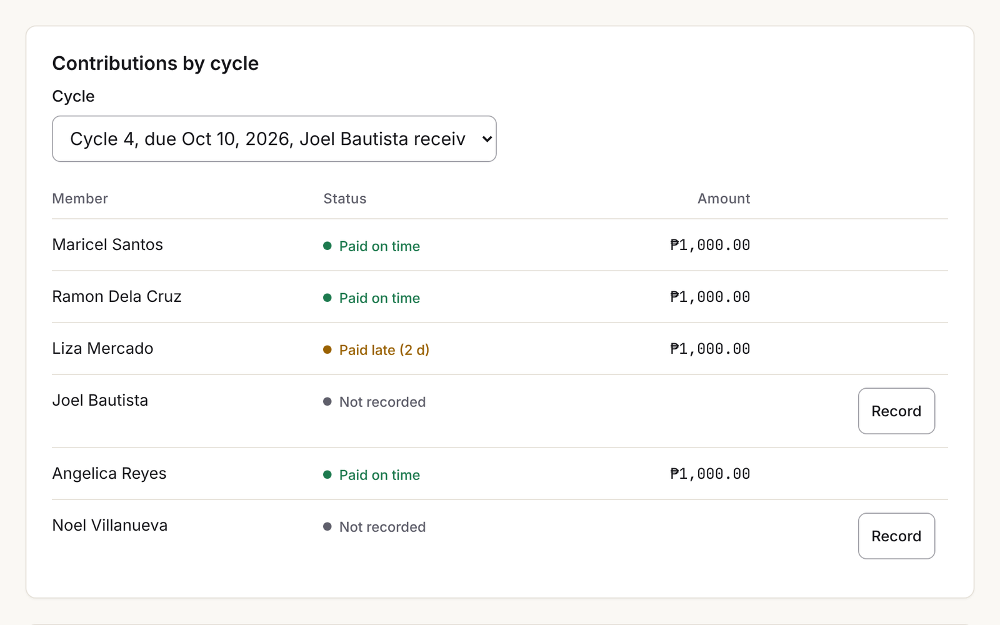
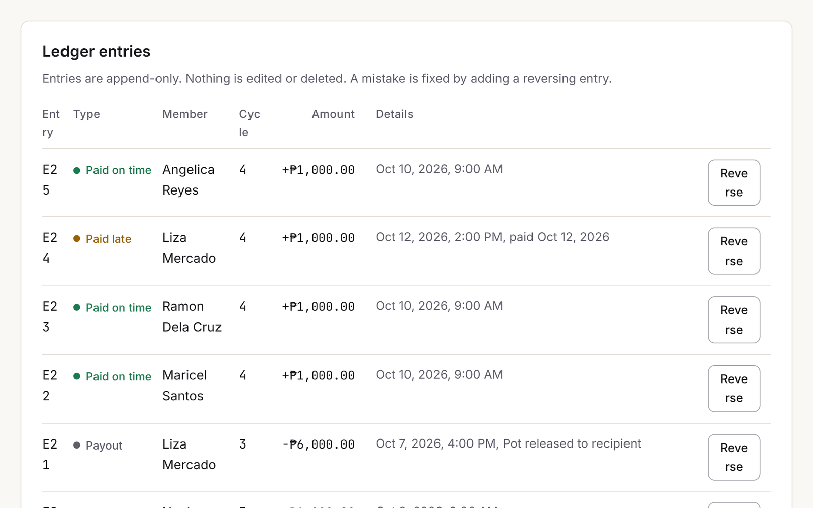
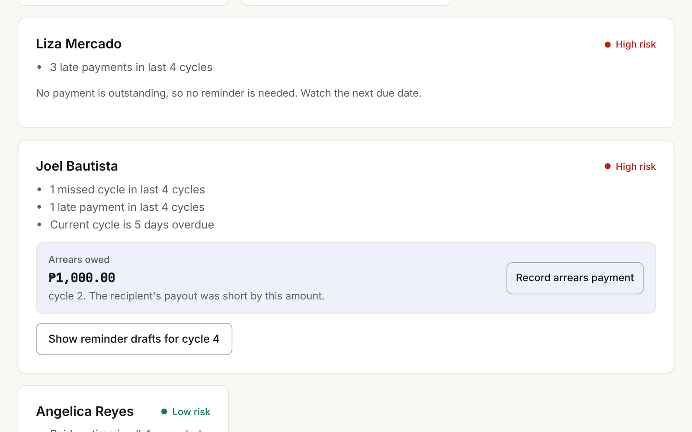

Case study
Online Paluwagan
A demo rotating-savings group with a reconciling ledger, fair payout rotation, and AI-drafted payment reminders a human approves.
Proves Fintech and the Philippine market
Problem
A paluwagan is a Filipino savings circle. Members pay a fixed amount each cycle, and one member takes the whole pot, until everyone has been paid once.
Most groups run on a chat thread and the organiser's memory. When someone pays late or misses a cycle, nobody is sure who is owed what. Disputes follow, and they are about friends and money at once.
Software for this has to be right about money first. A friendly reminder tool on top of wrong numbers makes the dispute worse.
Approach
I built the money rules as pure functions first and the screens second. The UI never does money math. It calls domain functions that the tests cover, and the store saves the result.
The ledger is append-only. A mistake is fixed with a reversing entry and a reason. When a member misses or underpays, the shortfall is recorded on the entry, the recipient's payout is short by the same amount, and the member owes it as arrears.
On top of that sit rule-based risk flags with their reasons shown, and reminder drafts in English and Filipino. A person edits and approves each draft before it can be sent, and sending is simulated. Everything stays in the browser. It is a portfolio demo, not a financial service.
Architecture
Decisions
- Chose integer centavos over decimal pesosbecause floats round. Text like
1,000.50is parsed with string and integer math, and no float enters the domain. - Chose an append-only ledger with reversals over editable entriesbecause an edit erases what happened. A reversal keeps it, needs a reason, and cannot itself be reversed or applied twice.
- Chose short payouts and arrears over covering the gapbecause the pot can only pay what it holds. The shortfall lands on the member who caused it, and arrears can never go negative.
- Chose one invariant checked everywhere over many special casesbecause net contributions must equal net payouts plus the pot, and the pot never goes negative. The property test checks that after every step.
- Chose human approval over automatic remindersbecause a reminder about money between friends needs judgment. A draft cannot be sent until a person approves it, and cannot be edited after.
Results
- 53 testsVitest, 6 files, all passing: ledger, rotation fairness, risk levels, reminder templates, seed data and currency formatting.
- 12,000 operationsThe ledger property test runs 40 seeds of 300 random operations across contributions, payouts, arrears payments and reversals. After every step it checks reconciliation, a non-negative pot, non-negative arrears and append-only behaviour.
- 95 / 100 / 100 / 100Lighthouse mobile preset on
vite preview: performance, accessibility, best practices, SEO. - 65.9 kBGzipped initial load: 61.2 kB JS, 4.1 kB CSS, 0.6 kB HTML. axe finds no WCAG 2.1 AA violations on any route in either theme.
Measured on one machine against a local build.
Screens



What I'd do next
- Export a group's ledger as a CSV the organiser can share, so the record outlives the browser.
- Try model-written reminder drafts beside the pre-written templates, behind the same approval step, and compare them.
- Test the money rules with a few real organisers before adding any feature that touches real money.